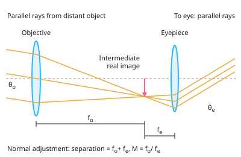

A-level Physics Year 13 · Topic 15
Astronomical telescopes
Astronomical telescopes is about the instruments we use to collect and analyse light from space.
We will draw ray diagrams for refracting and reflecting telescopes, and compare their strengths and weaknesses.
Then we study collecting and resolving power, CCD detectors, radio arrays, and why some wavelengths need telescopes in space.
- 6 subtopics
- 221 questions
- Free: 15.1 notes and 10 questions
In this topic
- 15.1Refracting astronomical telescope: ray diagrams and angular magnificationFree below · 34 questions
- 15.2Reflecting telescopes: Cassegrain design, mirrors and aberrationsOpen in Full Marks · 24 questions
- 15.3Collecting power, resolving power and the Rayleigh criterionOpen in Full Marks · 59 questions
- 15.4Charge-coupled devices compared with the eyeOpen in Full Marks · 55 questions
- 15.5Radio telescopes and arraysOpen in Full Marks · 20 questions
- 15.6Infrared, ultraviolet and X-ray telescopes and the effect of the atmosphereOpen in Full Marks · 29 questions
15.1 · Free notes
Refracting astronomical telescope: ray diagrams and angular magnification

Key points
- A refracting astronomical telescope uses two converging lenses: a large-diameter objective of long focal length f_o and an eyepiece of short focal length f_e.
- The objective forms a real, inverted, diminished intermediate image of the distant object in its focal plane. The eyepiece acts as a magnifying glass on this image.
- In normal adjustment the final image is at infinity. The focal points of the two lenses coincide, so the lens separation = f_o + f_e. Parallel rays enter and parallel rays leave, so the eye is relaxed.
- Angular magnification M = θ_e / θ_o = f_o / f_e. θ_o is the angle subtended by the object at the unaided eye (or objective) and θ_e is the angle subtended by the final image at the eye. M is a ratio of angles, so it has no unit.
- Derivation: the intermediate image has height h, so tan θ_o = h/f_o and tan θ_e = h/f_e. For small angles (in radians) M = (h/f_e)/(h/f_o) = f_o/f_e.
- Ray diagram marks: draw rays from an off-axis point at infinity as parallel rays at angle θ_o to the axis. Draw the ray through the centre of the objective undeviated. Show the real image at the common focal plane. Show the emerging rays parallel to each other at a larger angle θ_e. Add arrows and label f_o and f_e.
- The final image is virtual, inverted and at infinity. It is angularly larger, not linearly larger, than the object.
- For high magnification use a long f_o and a short f_e. A wider objective does not change M, but it increases collecting power and resolving power.
- Limitations of refractors are chromatic aberration (refractive index varies with wavelength, so colours focus at different points), spherical aberration, and light absorbed in the glass. A large lens is heavy and supported only at its edge, so it sags; this limits refractors to about 1 m diameter.
- Worked example: f_o = 1.50 m and f_e = 25 mm give M = 1.50/0.025 = 60, and the tube length in normal adjustment is 1.525 m.
In more detail
- Worked magnification: f_o = 1.20 m and f_e = 40 mm → M = 1.20 ÷ 0.040 = 30, and the tube length in normal adjustment is f_o + f_e = 1.24 m.
- Worked angle: the Moon subtends 9.0 × 10⁻³ rad; with M = 30 its image subtends 0.27 rad (about 15°).
- Intermediate image size: h = f_o θ_o = 1.20 × 9.0 × 10⁻³ = 1.1 × 10⁻² m, so the Moon's real image is about 1 cm across.
- Chromatic aberration: blue light refracts more than red, so it focuses closer to the lens, giving coloured fringes. An achromatic doublet (two glasses) reduces it.
Practice
Refracting astronomical telescope: ray diagrams and angular magnification: 10 questions
Pick an answer to check it, or open the answer for the explanation.
1. In a refracting astronomical telescope, which lenses are used as objective and eyepiece?
- Converging objective, diverging eyepiece, equal focal lengths
- Converging lenses: objective short f, eyepiece long f
- Two diverging lenses, objective with the longer f
- Converging lenses: objective long f, eyepiece short f
Show answer
D: Converging lenses: objective long f, eyepiece short f. A long-focal-length converging objective forms a large real image of the distant object. A short-focal-length converging eyepiece magnifies it, so M = f_o/f_e is large.
2. A refracting telescope has an objective of focal length 90 cm and an eyepiece of focal length 1.5 cm. What is its angular magnification in normal adjustment?
- 135
- 91.5
- 60
- 0.017
Show answer
C: 60. M = f_o/f_e = 90 cm / 1.5 cm = 60. It is a ratio of two angles, so it has no unit.
3. A telescope in normal adjustment has an objective of focal length 1.20 m and an eyepiece of focal length 4.0 cm. What is the separation of the lenses?
- 1.20 m
- 1.16 m
- 30 m
- 1.24 m
Show answer
D: 1.24 m. In normal adjustment the focal points coincide, so separation = f_o + f_e = 1.20 m + 0.040 m = 1.24 m.
4. Which statement describes the final image seen in a refracting telescope in normal adjustment?
- Real, inverted and at infinity
- Virtual, upright and at the near point
- Virtual, inverted and at infinity
- Real, upright, at the eyepiece focal point
Show answer
C: Virtual, inverted and at infinity. The intermediate image is inverted and lies at the eyepiece focal point. The eyepiece makes a virtual final image at infinity, still inverted relative to the object.
5. The Moon subtends 9.0 × 10⁻³ rad at the naked eye. A telescope of angular magnification 50 is used. What angle does the final image subtend at the eye?
- 50 rad
- 0.45 rad
- 9.0 × 10⁻³ rad
- 1.8 × 10⁻⁴ rad
Show answer
B: 0.45 rad. θ_e = M θ_o = 50 × 9.0 × 10⁻³ rad = 0.45 rad. Magnification multiplies the angle subtended.
6. A telescope in normal adjustment is 1.02 m long and has angular magnification 50. What is the focal length of its objective?
- 2.0 cm
- 100 cm
- 51 cm
- 98 cm
Show answer
B: 100 cm. f_o + f_e = 102 cm and f_o = 50 f_e, so 51 f_e = 102 cm. Then f_e = 2.0 cm and f_o = 100 cm.
7. You have converging lenses of focal length 4.0 cm, 25 cm and 100 cm. Which pair gives the largest angular magnification in normal adjustment?
- Objective 4.0 cm, eyepiece 100 cm
- Objective 100 cm, eyepiece 4.0 cm
- Objective 100 cm, eyepiece 25 cm
- Objective 25 cm, eyepiece 4.0 cm
Show answer
B: Objective 100 cm, eyepiece 4.0 cm. M = f_o/f_e is greatest with the longest f_o and shortest f_e: 100/4.0 = 25. The other pairs give 6.25, 4 and 0.04.
8. What causes chromatic aberration in the objective lens of a refracting telescope?
- The glass absorbs some colours more than others
- Rays far from the axis focus at a different point to central rays
- Refractive index varies with wavelength, so colours focus differently
- Diffraction of light at the edge of the lens
Show answer
C: Refractive index varies with wavelength, so colours focus differently. Glass has a different refractive index for each wavelength, so each colour has a different focal length and the image has coloured fringes. The second option describes spherical aberration.
9. Why are refracting telescopes with objectives much larger than about 1 m in diameter impractical?
- Glass cannot be polished to a curved shape
- A heavy lens is supported only at its edge and sags
- Larger lenses collect less light
- Larger lenses have shorter focal lengths
Show answer
B: A heavy lens is supported only at its edge and sags. A lens must be held round its rim, so a very large, heavy lens distorts under its own weight and the image degrades. Mirrors can be supported across the whole back.
10. A student measures 5.0 × 10⁻³ rad for a tower seen by the naked eye and 0.12 rad for its image in a telescope. What is the angular magnification?
- 6.0 × 10⁻⁴
- 24
- 0.60
- 0.042
Show answer
B: 24. M = θ_e/θ_o = 0.12 / 5.0 × 10⁻³ = 24. It is the image angle divided by the object angle, not the reverse.
Keep going in Full Marks
Full Marks has 34 questions on Refracting astronomical telescope: ray diagrams and angular magnification (24 more than here), set out in practice levels. You also get notes and 3D models for all 6 subtopics of Astronomical telescopes, plus games, timed exams and past papers.
On your exam board
Not in the OCR B, Edexcel and Cambridge specifications.